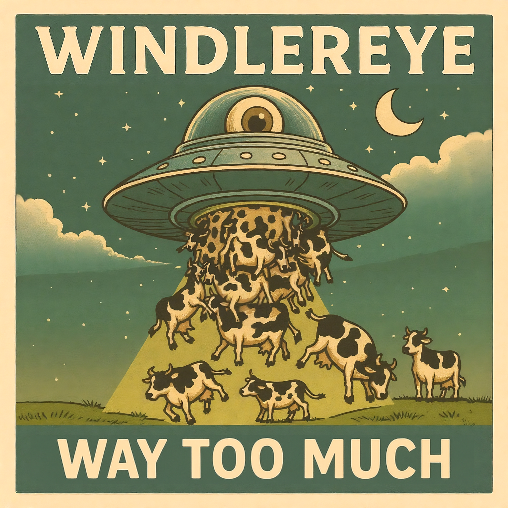

[Verse 1]
Under the lamp she folds the night in half
Breaks the edge before the thought can pass
Paper cuts sting where they press
White cuts in the hollow of breath
The chair sighs when she leans too far
[Chorus]
Bite it down, again!
Let the words go black in the dark
Bite it down, again!
Till the tongue holds nothing back
Keep your teeth around the names
They split, they run
The lamp sways with the games
It folds, it folds... In the flames!
[Verse 2]
The cup is cold and staring up
Ink on the palate where her tongue stays shut
She drags her teeth through the names she misses
Her jaw writes over his careful wishes
The floor shakes though no one walks past
[Chorus]
Bite it down, again!
Let the words go black in the dark
Bite it down, again!
Till the tongue holds nothing back
Keep your teeth around the names
They split, they run
The lamp sways with the games
It folds, it folds... In the flames!
[Verse 3]
Rain hasn't touched the window for days
Still her lips are lined in the ghost of stains
She bends to the shadow to read its face
Her eyes keep the corners from breaking away
The air tastes older than her hands
[Bridge]
Every line she swallows drags the walls in close
Every curve and serif burns behind her nose
The paper bends like bone inside her jaw
She tears the light in half and takes it raw
Pages drop slow as the throat closes
Corners curl in and vanish through her
[Chorus]
Bite it down, again!
Let the words go black in the dark
Bite it down, again!
Till the tongue holds nothing at all
Keep your teeth around the names
They split, they run
The lamp sways with the games
It folds, it folds... In flames!
[Verse 1]
Your face, deleted in a rush of light
An envelope I didn't get to write
The draft tears holes I cannot hide
I pressed undo until it died...
[Pre-Chorus]
I tried to fix it but the page snapped shut
Black screen stares, you know what?
Maybe it's right, should be like that
The keys spit dust when I press too hard
[Chorus]
Ctrl-Z tears the heart from me
Erase the blood, erase the plea
Tragedy in 60 hertz
Dragging me into the dirt
Ctrl-Z pulls the lines apart
[Verse 2]
A sentence floats where you should be
The ink stains the rest of me
I trace your name but it won't stick
The quill blinks, the silence clicks
[Bridge]
The letters bite, they twist in my hands
I press undo until it burns the strands
[Chorus]
Ctrl-Z tears the heart from me
Erase the blood, erase the plea
Tragedy in 60 hertz
Dragging me into the dirt
Ctrl-Z pulls the lines apart
[Chorus]
Ctrl-Z tears the heart from me
Erase the blood, erase the plea
Tragedy in 60 hertz
Dragging me into the dirt
Ctrl-Z pulls the lines apart
[Verse 1]
The room remembers every step I took
The dust follows my shadow around when I look
I leave no marks, the air forgets me again
Hands fold into themselves and tremble in vain
I tried to memorize the sound of the street outside
Before it went away... Before it died
[Chorus]
Hunger tears through me, a voice without a face
I reach for the world but it slips from my embrace
Hunger, keep it burning, let it scorch this space
I will vanish, but the streets will keep their pace
I will vanish, but the people will not wait
I will vanish, and the hunger seals my fate
[Verse 2]
The sun falls slower than I ever knew
Windows frame a life I will not pursue
Each face is a picture I cannot hold
I trace the edges of chairs, their stories cold
I wonder if memory will shoulder the strain
Or if it drifts away like shadowed rain
[Chorus]
Hunger tears through me, a voice without a face
I reach for the world but it slips from my embrace
Hunger, keep it burning, let it scorch this space
I will vanish, but the streets will keep their pace
I will vanish, but the people will not wait
I will vanish, and the hunger seals my fate
[Bridge]
Each heartbeat drags the walls in closer
Each breath slides between what I was and what remains
I will not call for help
I will not leave instructions
The world will fold itself into tomorrow
And I will only watch
[Chorus]
Hunger tears through me, a voice without a face
I reach for the world but it slips from my embrace
Hunger, keep it burning, let it scorch this space
I will vanish, but the streets will keep their pace
I will vanish, but the people will not wait
I will vanish, and the hunger seals my fate
[Verse 1]
The wall groans with numbers scratched too deep
The hour bends and refuses to speak
A shadow keeps its hand on the dial
And splits the breath into broken miles
[Pre-Chorus]
I felt the minutes break their skin
He grinned
And dragged the silence in
[Chorus]
Time Killer takes it slow
Breaks the hand and swallows whole
Time Killer with a grinding jaw
Tears the day, leaves it raw
No one moves until he says
No one moves until he says
[Verse 2]
The chalk dust clings where the morning failed
The clocks don't tick they grind their nails
He carved the air into iron rope
Hung the hours up till they choked
[Pre-Chorus]
I felt the seconds gnash their teeth
Beneath
He waits for me to breathe
[Chorus]
Time Killer takes it slow
Breaks the hand and swallows whole
Time Killer with a grinding jaw
Tears the day, leaves it raw
No one moves until he says
No one moves until he says
[Bridge]
Every page he eats folds into ash
Every corner fears under his lash
He waits behind the wall with hands of glass
I hear the spine of the night snap fast
[Verse 3]
The calendar sinks into his mouth
The floor keeps count though the lights burn out
The windows lean though the sky stays still
The Time Killer grinds till he gets his fill
[Chorus]
Time Killer takes it slow
Breaks the hand and swallows whole
Time Killer with a grinding jaw
Tears the day, leaves it raw
No one moves until he says
[Outro]
No one moves until he says
[Verse 1]
Floors shine with sugar, sticky to the skin
Fingers curl around glasses that clink and spin
The laughter scratches through the room like knives
I hold my breath as the ceiling comes alive
[Pre-Chorus]
Corks snap through silence like brittle drones
All eyes lift, all smiles supported on bones
I feel the hollow crawling under my ribs
A shadow slides close and it bites and digs
[Chorus]
Rotten champagne, the world ignites and falls apart
Raise your arms, the fire burns between your heart and hands
Every touch echoes into a void you can't outrun
We dance, we cheer, we lift a glass that stings the tongue
Rotten champagne, we scream for what is already gone
[Verse 2]
Mirrors bend and twist, strangers grin like snakes
Jacket clings with sweat, the skin beneath it quakes
A toast climbs thick and sour, choking every throat
Hands shake, applause drips from the crystal coat
[Bridge]
Step outside, the night holds nothing but glass
Bottles crackle, shadows ripple as I pass
Footsteps echo, and I can't recall my name
If the party's done or I've vanished in the flame
[Chorus]
Rotten champagne, the world ignites and falls apart
Raise your arms, the fire burns between your heart and hands
Every touch echoes into a void you can't outrun
We dance, we cheer, we lift a glass that stings the tongue
Rotten champagne, we scream for what is already gone
[Outro]
Fizz and frost cling to my lips
The laughter is a weight I cannot lift
I pour the last drop into a fading shade
It tastes of all the vows I never made
[Verse 1]
The screen just froze, the lights went thin
A silence pressed where the fight had been
I had played long on a rigged machine
Fed my hours till the coil ran lean
[Chorus]
I broke the lock! I cracked the spin!
No reset button! No "crawl back in"!
I walked away when the scoreboard blew!
Game Over for me...
Game Over for you!
[Verse 2]
The credits roll on a hollow din
I kept the weight of a thousand sins
I burned my last token through the palm of my hand
And the smoke, it curled where I chose to stand
[Chorus]
I broke the lock! I cracked the spin!
No reset button! No "crawl back in"!
I walked away when the scoreboard blew!
Game Over for me...
Game Over for you!
[Verse 3]
I played too long on a broken screen
It stole my days, it ate my dreams
But the final round was the only true
I pushed all in and I made it through
[Bridge]
No continues left, no cheat code calls
The floor once heavy is now nothing at all
The silence tastes like final bells
And I rise from the pit where the console fell
[Chorus]
I broke the lock! I cracked the spin!
No reset button! No "crawl back in"!
I walked away when the scoreboard blew!
Game Over for me...
Game Over for you!
[Outro]
No lights, no sound
No crowd, no cue
Just the echo...
Of me beating you
[Verse 1]
I keep a matchbox of manners in the left pocket of my patchwork coat
It rattles like a rumor and it knows how to vote
I tie my shoelace over the heel so the puddles will not gossip at night
I press my thumb to the supermarket clock and plead for polite light
I fold a folded apology into a used ticket stub and feed it to a bus
The bus coughs once and grants me a minute without fuss
Neighbors keep receipts for luck taped to their doors like museum notes
We keep our tiny laws written in chewing gum and quotes
[Pre-Chorus]
Do not speak your charm to a cashier unless you file form B
Do not trade a wish for lunch unless you give back the key
One superstition per pocket per block or the pigeons unionize and shout
We live on very small instructions and they hold us in without doubt
[Chorus]
Minor superstitions
Pocket-light rules that bend the day
Minor superstitions
Carry one soft law when the lamp forgets to stay
Minor superstitions
Tap your heel three times on Tuesday's seam
Minor superstitions
Small detonations that steer the stream
[Verse 2]
I lost my favorite charm between a lamppost and a laundromat's sigh
It slipped out like bad change and puddles taught the sidewalk to lie
The toaster began to quarrel with the bread about its childhood dream
Traffic lights rehearsed a poem and the river learned to scheme
A telephone booth sold me directions in syrup for a tenner and a cough
A vendor with a scalpel smile traded me a moon that did not quite go off
My neighbor bartered a weather-jar for a paper heart and a dented spoon
We all trade in tiny currencies and wake with new fortunes by noon
[Pre-Chorus]
You must fold your omen twice and promise the fern a tale
You must whistle three notes then duck so the crosswalk does not fail
If you hand a charm to a taxman it expires by midday law
If you cry into a streetlamp it will give you the directions that you saw
[Chorus]
Minor superstitions
Pocket-light rules that bend the day
Minor superstitions
Carry one soft law when the lamp forgets to stay
Minor superstitions
Tap your heel three times on Tuesday's seam
Minor superstitions
Small detonations that steer the stream
[Bridge]
Snap your shoelace left not right so the mail sings polymath
Carry a spare apology in a jar labeled "for aftermath"
Never whistle while you water the cacti or they will whistle you back
Never eat a permission slip unless you've washed it in coal and black
Keep a spoon you never use to feed the calendar its lies
Trade a laugh for silence at the pawnshop of goodbyes
Tin cans vote; the baker files petitions in the crust
Leave a carrot on the roof for the weather-monkey or trust the gust
[Interlude]
Sign up today for the Minor Superstition Exchange.
Receive two complimentary charms. One free pamphlet.
We accept whispers cash and slightly used apologies.
Call now. The line hums. The line listens. The line files.
(We accept humming)
[Verse 3]
I found a magician who kept unlucky commas in his hat
He traded me a map that only folds when you say "this is that"
I stole back my superstition from a cat
That worked nights at the museum of Lost Intent
The cat blinked twice and surrendered it with dignified consent
The city council argued with a pigeon about property lines and bread
A boy stitched up a bruise with a ribbon that hummed like lead
We stitched the seams of evening with quips and tape and urgent songs
Minor hands with major patience righting tiny wrongs
[Breakdown]
We made municipal miracles out of receipts and string
We convinced the rain to whisper when the big things begin
We teach the lamplight manners so the moon learns to behave
We hoard tiny kindnesses like coins in a knave
[Chorus]
Minor superstitions
Pocket-light rules that bend the day
Minor superstitions
Carry one soft law when the lamp forgets to stay
Minor superstitions
Tap your heel three times on Tuesday's seam
Minor superstitions
Small detonations that steer the stream
[Outro]
If you find your luck missing check the pockets of your coat
If you find your heart arguing with the kettle offer it a note
If you ever see a lamplight wink like it remembers your name
Smile. You are licensed to invent a superstition and stake your claim.
[Verse 1]
The refrigerator spoke at 3 A.M.,
Whispered in burplang, "Your socks are condemned."
I opened the door, saw idiotic galaxies freeze,
A carton of juice was praying on its knees.
My treadmill screamed, "I don't know direction!"
Forward and backward filed for disconnection.
I was deaf, but now I see
Semantic satiation yelling "no!, no!, no!," inside of me.
[Pre-Chorus]
Salt burns sweeter when the outlet sings,
Butterflies hatch with aluminum wings,
Is this the ninja virus action shot?
Or is this the shopping list the cosmos forgot?
[Chorus]
FRIDGE PROPHET!
Chill the flame! Boil the snow!
FRIDGE PROPHET!
Name the unnamed!
FRIDGE PROPHET!
Faith in frost, devotion in mold!
FRIDGE PROPHET!
Every ice cube's been foretold!
[Verse 2]
I baptized my shadow in expired milk,
Then wore a halo spun out of cowspider silk.
The toaster declared it could levitate fire,
The blender confessed it was born a liar.
Ok that's weird dinosaur anatomy
Skeleton built from apostrophe,
A fossil that shouts: "Your dinner is late!"
While chewing the keys to the garden gate.
[Pre-Chorus]
Do you feel the yeast in your spine tonight?
Do you taste the mitochondria in the freezer light?
Do you trust the pulsar, the wretching code?
The fridge is a temple, the plug is the road.
[Chorus]
FRIDGE PROPHET! (cold revelation!)
FRIDGE PROPHET! (ice-shaped salvation!)
FRIDGE PROPHET! (bless the frost!)
FRIDGE PROPHET! (forget the cost!)
[Bridge]
Plastic forks in civil war,
Every spoon is a metaphor,
Yes, my knives are coupon codes,
Yes, my lungs are haunted toads!
Spin the dial, the fridge door sings,
Entropy's chicken with frozen hot wings!
Hallelujah, ketchup crown,
The future's an aisle, shut it down!
[Chorus]
FRIDGE PROPHET!
Crack the ice! Melt the law!
FRIDGE PROPHET!
Devour the spice!
FRIDGE PROPHET!
It's not a kitchen, it's a revelation!
FRIDGE PROPHET!
Full of pig chomp, cold salvation!
[Outro]
The light stays on when the door is shut.
The light stays on when the door is shut.
The light stays on when the door is shut.
The light stays on when the door is shut.
[Verse 1]
Global warming twisted the lens
Troposphere acts like a fry-pan bent
Big sun swollen in the sky
Grass grows like a green tidal lie
Species vanish like socks in a dryer
Predators shrivel, jerky on fire
Raccoons collapse into raisins with teeth
Dogs with rabies cough dust in the street
On the hill, one cow shivers, goosebumps like static
The air is buzzing, electric field goes erratic
"Thunderbolt and lightning, very very frightening for the cow"
ZAP, lightning hits its eye, raising eyebrows
The cow fuses with the pasture
Becomes chlorophyll disaster
[Chorus]
TOO MANY COWS!
I can't see the ground!
Cow roars echo in surround!
TOO MANY COWS!
The sun's their chow!
Chewing on photons, head in the clouds!
[Verse 2]
C-O-two milkshake, sip it straight from the air
Leaves for lungs, but hooves still square
They bloom with udders, sprout with pride
Grass in their veins, photosynthesize
One cow, two cows, baby cows shine
Blink once - hundreds, blink twice - nine million in line
By breakfast it's billions, by lunch it's ten more
The fields are earthquakes made of mooing floor
[Pre-Chorus]
Moo! Attack! Moo! Attack!
Ten billion shadows, the horizon cracks
No predators left, the planet tilts
The cows have cities, the cows pour milk
[Chorus]
TOO MANY COWS!
I can't see the ground!
Cow roars echo in surround!
TOO MANY COWS!
The sun's their chow!
Chewing on photons, head in the clouds!
[Bridge]
They learn to speak, they learn to write,
They stack their hay-bales into skyscraper height
Four legs walking, then two legs talkin',
Barnyard sermons, beef-a-la flocking
"Grass is law, the sun our feast!
Carbon's candy, sky's our beast!"
The cow looks up and asks out loud:
"Was there ever a time when the world was cowed?"
[Chorus]
TOO MANY COWS!
I can't see the ground!
Cow roars echo in surround!
TOO MANY COWS!
The sun's their chow!
Chewing on photons, head in the clouds!
[Verse 3]
So, plot twist:
Skyscrapers smell faintly of hay
Languages grow out of moo decay
Hands appear where hooves once played
The cow becomes myth, the myth remains
You look in the mirror, your jawline sags
Behind your eyes, a pasture brags
DNA whisper, fossil vow:
"You were never human. You were always cow."
[Outro]
TOO MANY COWS!
I can't see the ground!
Cow roars echo in surround!
TOO MANY COWS!
The sun's their chow!
Chewing on photons, head in the clouds!